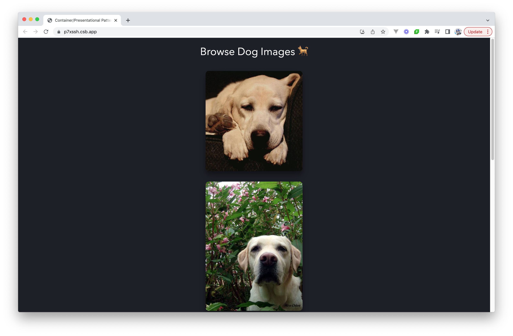

أنماط Vue
نمط الحاوية/العرضية
في عام 2015، كتب Dan Abramov مقالًا بعنوان “المكوّنات العرضية والحاويات” (Presentational and Container Components) غيّر طريقة تفكير كثير من المطوّرين في بنية المكوّنات (component architecture) داخل React. وقد طرح نمطًا يقسم المكوّنات إلى فئتين:
- المكوّنات العرضية (Presentational Components) أو “الغبيّة” (Dumb Components): تهتمّ بكيفية ظهور الأشياء. فهي لا تحدّد كيفية تحميل البيانات أو تعديلها، بل تتلقّى البيانات والاستدعاءات (callbacks) حصريًا عبر الخصائص (props).
- المكوّنات الحاوية (Container Components) أو “الذكية” (Smart Components): تهتمّ بكيفية عمل الأشياء. فهي توفّر البيانات والسلوك للمكوّنات العرضية أو لمكوّنات حاوية أخرى.
رغم أن هذا النمط ارتبط في الأصل بـ React، فإن مبدئه الأساسي تمّ تبنّيه وتكييفه بصيغ مختلفة عبر مكتبات وأطر عمل أخرى.
قدّم تمييز Dan طريقة أوضح وأكثر قابلية للتوسّع لهيكلة تطبيقات JavaScript. فبتحديد مسؤوليات أنواع المكوّنات المختلفة بوضوح، تمكّن المطوّرون من ضمان قابلية استخدام أفضل لعناصر الواجهة (العرضية) والمنطق (الحاويات). وكانت الفكرة أنه إذا أردنا تغيير طريقة ظهور شيء ما (مثل تصميم زر)، فيمكننا فعل ذلك دون المساس بمنطق التطبيق. وبالمقابل، إذا احتجنا تغيير كيفية تدفّق البيانات أو معالجتها، فإن المكوّنات العرضية تبقى دون مساس، مما يضمن بقاء الواجهة متّسقة.
لكن مع ظهور الخطافات (hooks) في React وComposition API في Vue 3، بدأت حدود الفصل الواضحة بين المكوّنات العرضية والحاوية تتلاشى. فقد أتاحت الخطافات وComposition API للمطوّرين تغليف الحالة والمنطق وإعادة استخدامهما دون أن يكونوا ملتزمين بالضرورة بمكوّن حاوية قائم على الأصناف (class-based) أو بـ Options API. ونتيجةً لذلك، لم يعد نمط الحاوية/العرضية مُتّبعًا بهذه الدرجة من الصرامة التي كان عليها. ومع ذلك، سنقضي بعض الوقت في هذا المقال في مناقشة النمط، لأنه لا يزال مفيدًا في أوقات معيّنة.
لنفترض أننا نريد إنشاء تطبيق يجلب 6 صور لكلاب، ويعرض هذه الصور على الشاشة.

ولكي نتبع نمط الحاوية/العرضية، نريد فرض الفصل بين المسؤوليات (separation of concerns) بفصل هذه العملية إلى جزأين:
- المكوّنات العرضية (presentational components): مكوّنات تهتمّ بكيفية عرض البيانات للمستخدم. وفي هذا المثال، يكون ذلك بعرض قائمة صور الكلاب.
- المكوّنات الحاوية (container components): مكوّنات تهتمّ بأيّ بيانات تُعرض للمستخدم. وفي هذا المثال، يكون ذلك بجلب صور الكلاب.
يتعلّم جلب صور الكلاب بـمنطق التطبيق (application logic)، بينما يقتصر عرض الصور على العرض (view) فقط.
المكوّن العرضي (Presentational Component)
يتلقّى المكوّن العرضي بياناته عبر الخصائص (props). وتتمثّل وظيفته الأساسية ببساطة في عرض البيانات التي يتلقّاها بالطريقة التي نريدها، بما في ذلك الأنماط (styles)، دون تعديل تلك البيانات.
لننظر إلى المثال الذي يعرض صور الكلاب. وعند عرض صور الكلاب، نريد ببساطة المرور على كل صورة كلاب تمّ جلبها من الواجهة البرمجية وعرض تلك الصور. ولِفعل ذلك، يمكننا إنشاء مكوّن DogImages يتلقّى البيانات عبر الخصائص ويعرض ما يتلقّاه.
<!-- DogImages.vue -->
<template>
<img v-for="(dog, index) in dogs" :src="dog" :key="index" alt="Dog" />
</template>
<script setup>
import { defineProps } from "vue";
const { dogs } = defineProps(["dogs"]);
</script>
يمكن اعتبار مكوّن DogImages مكوّنًا عرضيًا. والمكوّنات العرضية عادةً عديمة الحالة (stateless): فهي لا تحتوي على حالتها الخاصة، إلا إذا احتاجت إلى حالة لأغراض الواجهة. والبيانات التي تتلقّاها لا يغيّرها المكوّنات العرضية نفسها.
وتتلقّى المكوّنات العرضية بياناتها من المكوّنات الحاوية (container components).
المكوّنات الحاوية (Container Components)
الوظيفة الأساسية للمكوّنات الحاوية هي تمرير البيانات (pass data) إلى المكوّنات العرضية التي تحتوي عليها. أما المكوّنات الحاوية نفسها فعادةً لا تعرض أيّ مكوّنات أخرى سوى المكوّنات العرضية التي تهتمّ ببياناتها. ولأنها لا تعرض أيّ شيء بنفسها، فإنها عادةً لا تحتوي على أيّ أنماط (styling) أيضًا.
في مثالنا، نريد تمرير صور الكلاب إلى المكوّن العرضي DogsImages. وقبل أن نتمكّن من ذلك، نحتاج إلى جلب الصور من واجهة برمجية خارجية (API). نحتاج إلى إنشاء مكوّن حاوية يجلب هذه البيانات، ويمرّرها إلى المكوّن العرضي DogImages لعرضها على الشاشة. وسنسمّي هذا المكوّن الحاوية DogImagesContainer.
<!-- DogImagesContainer.vue -->
<template>
<DogImages :dogs="dogs" />
</template>
<script setup>
import { ref, onMounted } from "vue";
import DogImages from "./DogImages.vue";
const dogs = ref([]);
onMounted(async () => {
const response = await fetch(
"https://dog.ceo/api/breed/labrador/images/random/6"
);
const { message } = await response.json();
dogs.value = message;
});
</script>
يجمع هذان المكوّنان معًا بين جعل معالجة منطق التطبيق مفصولة عن العرض ممكنة.
ولباختصار، هذا هو نمط الحاوية/العرضية. وعند التكامل مع حلول إدارة الحالة مثل Pinia، يمكن الاستفادة من المكوّنات الحاوية للتفاعل مباشرةً مع المخزن (store)، بجلب الحالة أو تعديلها حسب الحاجة. ويتيح ذلك أن تظل المكوّنات العرضية نقية (pure) وغير واعية بمنطق التطبيق الأوسع، فلا تركز إلا على عرض واجهة المستخدم بناءً على الخصائص التي تتلقّاها.
JavaScript iconDogImagesContainer.vue
<template>
<DogImages :dogs="dogs" />
</template>
<script setup>
import { ref, onMounted } from "vue";
/* eslint-disable-next-line no-unused-vars */
import DogImages from "./DogImages.vue";
const dogs = ref([]);
onMounted(async () => {
const response = await fetch(
"https://dog.ceo/api/breed/labrador/images/random/6"
);
const { message } = await response.json();
dogs.value = message;
});
</script>
دوال التركيب (Composables)
اقرأ أيضًا دليل دوال التركيب (Composables) لتتعمّق في فهم دوال التركيب.
في حالات كثيرة، يمكن استبدال نمط الحاوية/العرضية بدوال التركيب (composables). فقد جعل تقديم دوال التركيب من السهل على المطوّرين إضافة حالة ذاتها دون الحاجة إلى مكوّن حاوية يوفّر تلك الحالة.
بدلًا من وضع منطق جلب البيانات داخل مكوّن DogImagesContainer، يمكننا إنشاء دالة تركيب تجلب الصور وتُعيد مصفوفة الكلاب.
import { ref, onMounted } from "vue";
export default function useDogImages() {
const dogs = ref([]);
onMounted(async () => {
const response = await fetch(
"https://dog.ceo/api/breed/labrador/images/random/6"
);
const { message } = await response.json();
dogs.value = message;
});
return { dogs };
}
باستخدام هذا الخطّاف، لم نعد بحاجة إلى مكوّن الحاوية DogImagesContainer المغلِّف لجلب البيانات وإرسالها إلى المكوّن العرضي DogImages. وبدلًا من ذلك، يمكننا استخدام هذا الخطّاف مباشرةً داخل مكوّننا العرضي DogImages!
<template>
<img v-for="(dog, index) in dogs" :src="dog" :key="index" alt="Dog" />
</template>
<script setup>
import useDogImages from "../composables/useDogImages";
/* eslint-disable-next-line no-unused-vars */
const { dogs } = useDogImages();
</script>
باستخدام الخطّاف useDogImages()، فإننا ما زلنا نفصل منطق التطبيق عن العرض. فنحن نكتفي باستخدام البيانات المُعادة من الخطّاف useDogImages، دون تعديل تلك البيانات داخل مكوّن DogImages.
ومع كل التغييرات التي أجريناها، يمكن تلخيص تطبيقنا على النحو التالي.
JavaScript iconuseDogImages.js
import { ref, onMounted } from 'vue';
export default function useDogImages() {
const dogs = ref([]);
onMounted(async () => {
const response = await fetch("https://dog.ceo/api/breed/labrador/images/random/6");
const { message } = await response.json();
dogs.value = message;
});
return { dogs };
}
تجعل دوال التركيب فصل المنطق عن العرض داخل المكوّن سهلًا، تمامًا كما يفعل نمط الحاوية/العرضية. وهي توفر علينا الطبقة الإضافية التي كانت ضرورية لتغليف المكوّن العرضي داخل المكوّن الحاوية.